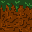
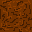
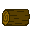
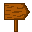
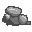
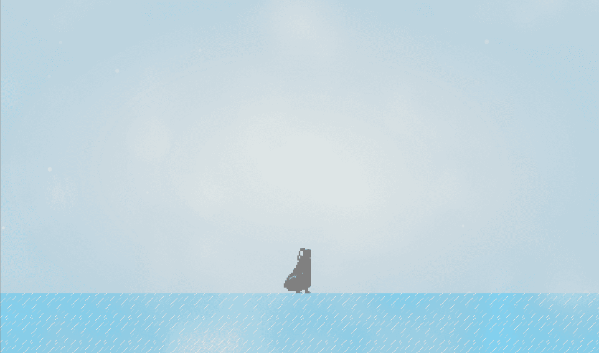
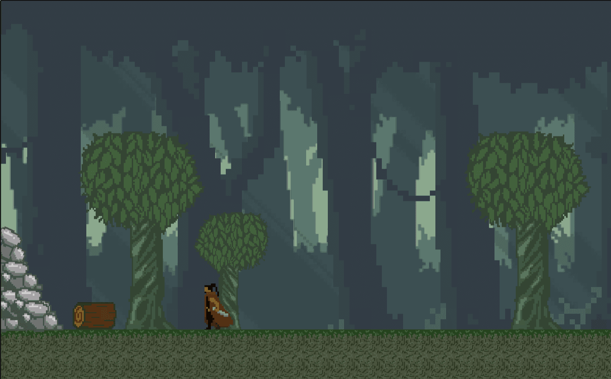
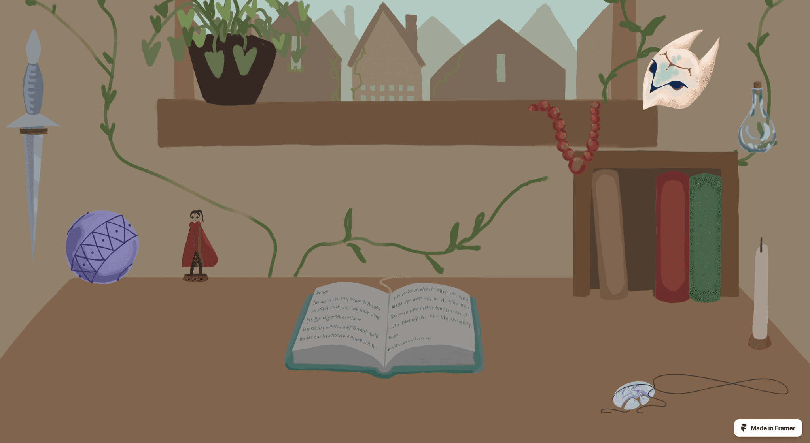
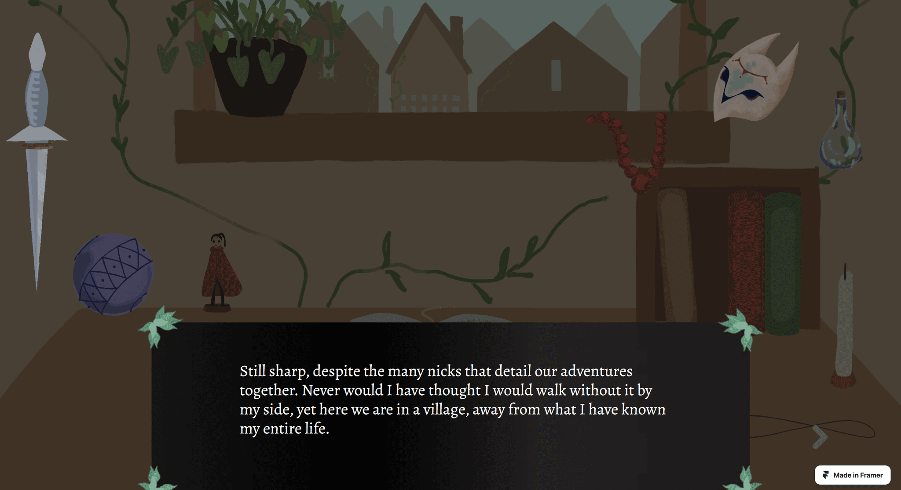

Project Planning and Brainstorming
The first goal is to plan out our game and discuss what we think are possible, what we wish for in the game, and what we won't do. I gathered with the team to discuss the identity of the game demo and voiced out some ideas that can be used as inspiration from existing games.
Project Planning Screenshots


Total images: 6
Level Design and Illustrating Game Assets
Below is a collection of my level design sketches and game assets, as well as how the assets look in the gameplay.
Hand-drawn Game Assets





Total images: 8
Assets Sample in the Game


Interactive Story Telling
With the decision of the team to add a website on top of the game demo, I took the responsibility of creating the website using Framer.

